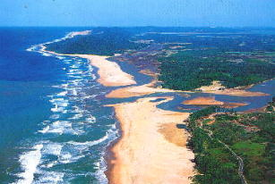
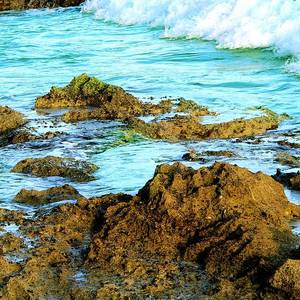
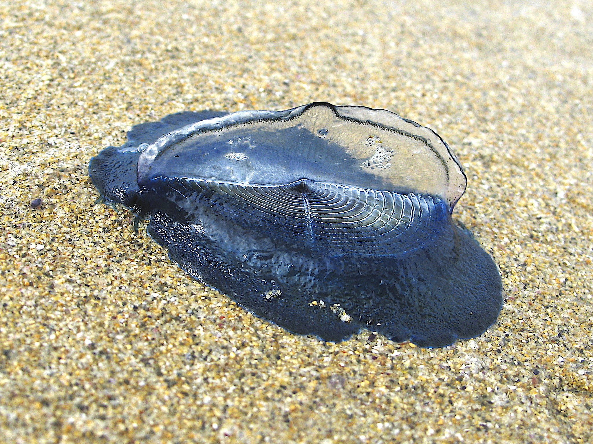
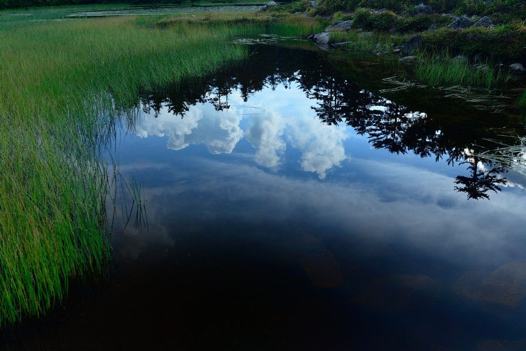
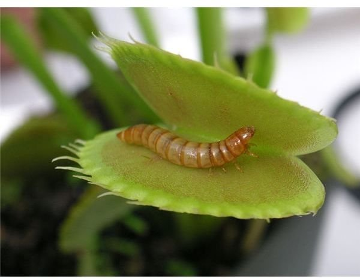
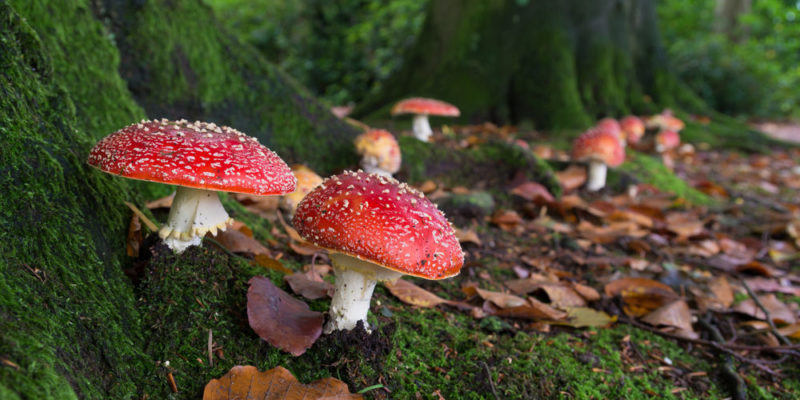

 An estuary mouth and marine coastal waters, part of an aquatic ecosystem
An aquatic system is an ecosystem found in and around a body of water, in contrast to land-based terrestrial ecosystems . Aquatic ecosystems contain communities of organisms—aquatic life—that are dependent on each other and on their environment. The two main types of aquatic ecosystems are marine ecosystems and freshwater ecosystems.[1] Freshwater ecosystems may be lentic (slow moving water, including pools, ponds, and lakes); lotic (faster moving water, for example streams and rivers); and wetlands (areas where the soil is saturated or inundated for at least part of the time).[2]
Types
Marine Ecosystems
Coral reefs form complex marine ecosystems with tremendousbiodiversity.
This section is an excerpt from Marine ecosystem.[edit]
Coral reefs form complex marine ecosystems with tremendous biodiversity.
Marine ecosystem are the largest of Earth's aquatic ecosystems and exist in waters that have a high salt content. These systems contrast with freshwater ecosystem , which have a lower salt content. Marine waters cover more than 70% of the surface of the Earth and account for more than 97% of Earth's water supply[3][4] and 90% of habitable space on Earth.[5] Seawater has an average salinity of 35 parts per thousand of water. Actual salinity varies among different marine ecosystems.[6] Marine ecosystems can be divided into many zones depending upon water depth and shoreline features. The oceanic zone is the vast open part of the ocean where animals such as whales, sharks, and tuna live. The benthic zone consists of substrates below water where many invertebrates live. The intertidal zone is the area between high and low tides. Other near-shore (neritic) zones can include mudflats, seagrass meadows, mangroves, rocky intertidal systems, salt marshes, coral reefs, lagoons. In the deep water, hydrothermal vents may occur where chemosynthetic sulfur bacteria form the base of the food web.
Marine coastal ecosystem

This paragraph is an excerpt from Marine coastal ecosystem.[edit] Marine coastal ecosystem is a marine ecosystem which occurs where the land meets the ocean. Marine coastal ecosystems include many very different types of marine habitats, each with their own characteristics and species composition. They are characterized by high levels of biodiversity and productivity.
Marine Surface Ecosystem

This paragraph is an excerpt from Ocean surface ecosystem.[edit]
Organisms that live freely at the ocean surface, termed neuston, include keystone organisms like the golden seaweed Sargassum that makes up the Sargasso Sea, floating barnacles, marine snails, nudibranchs, and cnidarians. Many ecologically and economically important fish species live as or rely upon neuston. Species at the surface are not distributed uniformly; the ocean's surface harbours unique neustonic communities and ecoregions found at only certain latitudes and only in specific ocean basins. But the surface is also on the front line of climate change and pollution. Life on the ocean's surface connects worlds. From shallow waters to the deep sea, the open ocean to rivers and lakes, numerous terrestrial and marine species depend on the surface ecosystem and the organisms found there.[7]
Freshwater Ecosystem
This section is an excerpt from Freshwater ecosystem.[edit] Freshwater ecosystems are a subset of Earth's aquatic ecosystems. They include lakes, ponds, rivers, streams, springs, bogs, and wetlands [8] They can be contrasted with marine ecosystems, which have a larger salt content. Freshwater habitats can be classified by different factors, including temperature, light penetration, nutrients, and vegetation. There are three basic types of freshwater ecosystems: Lentic (slow moving water, including pools, ponds, and lakes), lotic (faster moving water, for example streams and rivers) and wetlands (areas where the soil is saturated or inundated for at least part of the time).[9][8] Freshwater ecosystems contain 41% of the world's known fish species.[10]
Lentic Ecosystem(lakes)

This section is an excerpt from Lake ecosystem.[edit]
A lake ecosystem or lacustrine ecosystem includes biotic (living) plants, animals and micro-organisms, as well as abiotic (non-living) physical and chemical interactions.[11] Lake ecosystems are a prime example of lentic ecosystems (lentic refers to stationary or relatively still freshwater, from the Latin lentus, which means "sluggish"), which include ponds, lakes and wetlands, and much of this article applies to lentic ecosystems in general. Lentic ecosystems can be compared with lotic ecosystems, which involve flowing terrestrial waters such as rivers and streams. Together, these two ecosystems are examples of freshwater ecosystems.
Lotic ecosystems(rivers)
This section is an excerpt from River ecosystem.[edit] River ecosystems are flowing waters that drain the landscape, and include the biotic (living) interactions amongst plants, animals and micro-organisms, as well as abiotic (nonliving) physical and chemical interactions of its many parts.[12][13] River ecosystems are part of larger watershed networks or catchments, where smaller headwater streams drain into mid-size streams, which progressively drain into larger river networks. The major zones in river ecosystems are determined by the river bed's gradient or by the velocity of the current. Faster moving turbulent water typically contains greater concentrations of dissolved oxygen, which supports greater biodiversity than the slow-moving water of pools. These distinctions form the basis for the division of rivers into upland and lowland rivers.
The food base of streams within riparian forests is mostly derived from the trees, but wider streams and those that lack a canopy derive the majority of their food base from algae. Anadromous fish are also an important source of nutrients. Environmental threats to rivers include loss of water, dams, chemical pollution and intoduced species. [14] A dam produces negative effects that continue down the watershed. The most important negative effects are the reduction of spring flooding, which damages wetlands, and the retention of sediment, which leads to the loss of deltaic wetlands.[15]
Wetlands
This section is an excerpt from Wetland.[edit]
Wetlands, or simply a wetland , is a distinct ecosystem that is flooded or saturated by water, either permanently (for years or decades) or seasonally (for weeks or months). Flooding results in oxygen-free (anoxic) processes prevailing, especially in the soils.[16] The primary factor that distinguishes wetlands from terrestrial land forms or water bodies is the characteristic vegetation of aquatic plants , adapted to the unique anoxic hydric soils.[17] Wetlands are considered among the most biologically diverse of all ecosystems, serving as home to a wide range of plant and animal species. Methods for assessing wetland functions, wetland ecological health , and general wetland condition have been developed for many regions of the world. These methods have contributed to wetland conservation partly by raising public awareness of the functions some wetlands provide.[18] Constructed wetlands are designed and built to treat municipal and industrial wastewater as well as to divert stormwater runoff. Constructed wetlands may also play a role in water-sensitive urban design.
Functions
Further information: ecosystem
Aquatic ecosystems perform many important environmental functions. For example, they recycle nutrients, purify water, attenuate floods, recharge ground water and provide habitats for wildlife.[19] The biota of an aquatic ecosystem contribute to its self-purification, most notably microorganisms, phytoplankton, higher plants, invertebrates, fish, bacteria, protists, aquatic fungi, and more. These organisms are actively involved in multiple self-purification processes, including organic matter destruction and water filtration. It is crucial that aquatic ecosystems are reliably self-maintained, as they also provide habitats for species that reside in them.[20]
In addition to environmental functions, aquatic ecosystems are also used for human recreation, and are very important to the tourism industry, especially in coastal regions.[21] They are also used for religious purposes, such as the worshipping of the Jordan River by Christians, and educational purposes, such as the usage of lakes for ecological study.[22]
Biotic characteristics (living components)
The biotic characteristics are mainly determined by the organisms that occur. For example, wetland plants may produce dense canopies that cover large areas of sediment—or snails or geese may graze the vegetation leaving large mud flats. Aquatic environments have relatively low oxygen levels, forcing adaptation by the organisms found there. For example, many wetland plants must produce aerenchyma to carry oxygen to roots. Other biotic characteristics are more subtle and difficult to measure, such as the relative importance of competition, mutualism or predation.[23] There are a growing number of cases where predation by coastal herbivores including snails, geese and mammals appears to be a dominant biotic factor.[24]
Autotrophic organisms

Autotrophic organisms are producers that generate organic compounds from inorganic material. Algae use solar energy to generate biomass from carbon dioxide and are possibly the most important autotrophic organisms in aquatic environments.[25] The more shallow the water, the greater the biomass contribution from rooted and floating vascular plants. These two sources combine to produce the extraordinary production of estuaries and wetlands, as this autotrophic biomass is converted into fish, birds, amphibians and other aquatic species.
Chemosynthetic bacteria are found in benthic marine ecosystems. These organisms are able to feed on hydrogen sulfide in water that comes from volcanic vents. Great concentrations of animals that feed on these bacteria are found around volcanic vents . For example, there are giant tube worms (Riftia pachyptila) 1.5 m in length and clams (Calyptogena magnifica) 30 cm long.
Heterotrophic organisms

Heterotrophic organisms consume autotrophic organisms and use the organic compounds in their bodies as energy sources and as raw materials to create their own biomass.[25]
Euryhaline organisms are salt tolerant and can survive in marine ecosystems, while stenohaline or salt intolerant species can only live in freshwater environments
Abiotic characteristics (non-living components)
An ecosystem is composed of biotic communities that are structured by biological interactions and abiotic environmental factors. Some of the important abiotic environmental factors of aquatic ecosystems include substrate type, water depth, nutrient levels, temperature, salinity, and flow.[23][19] It is often difficult to determine the relative importance of these factors without rather large experiments. There may be complicated feedback loops. For example, sediment may determine the presence of aquatic plants, but aquatic plants may also trap sediment, and add to the sediment through peat.
The amount of dissolved oxygen in a water body is frequently the key substance in determining the extent and kinds of organic life in the water body. Fish need dissolved oxygen to survive, although their tolerance to low oxygen varies among species; in extreme cases of low oxygen, some fish even resort to air gulping.[28] Plants often have to produce aerenchyma, while the shape and size of leaves may also be altered.[29] Conversely, oxygen is fatal to many kinds of anaerobic bacteria.[25]
Nutrient levels are important in controlling the abundance of many species of algae.[30] The relative abundance of nitrogen and phosphorus can in effect determine which species of algae come to dominate.[31] Algae are a very important source of food for aquatic life, but at the same time, if they become over-abundant, they can cause declines in fish when they decay.[32] Similar over-abundance of algae in coastal environments such as the Gulf of Mexico produces, upon decay, a hypoxic region of water known as a deadzone .[33]
The salinity of the water body is also a determining factor in the kinds of species found in the water body. Organisms in marine ecosystems tolerate salinity, while many freshwater organisms are intolerant of salt. The degree of salinity in an estuary or delta is an important control upon the type of wetland (fresh, intermediate, or brackish), and the associated animal species. Dams built upstream may reduce spring flooding, and reduce sediment accretion, and may therefore lead to saltwater intrusion in coastal wetlands.[23]
Freshwater used for irrigation purposes often absorbs levels of salt that are harmful to freshwater organisms.[25]
See also
Aquatic plant
- Plant that has adapted to living in an aquatic environment.
Hydrobiology
- Science of life and life processes in water
Alexander, David E.; Fairbridge, Rhodes W., eds. (1999). Encyclopedia of Environmental Science. Kluwer Academic Publishers, Springer . p. 27. ISBN 0-412-74050-8 via Internet Archive.
Vaccari, David A.; Strom, Peter F.; Alleman, James E. (2005). Environmental Biology for Engineers and Scientists. Wiley-Interscience . ISBN 0-471-74178-7.[
"Ocean Institute" . www.oceanicinstitute.org. Archived from the original on 3 January 2019. Retrieved 1 December 2018
This page was last edited on 2 July 2023, at 16:13 (UTC)
Text is available under the Creative Commons Attribution-ShareAlike License 4.0; additional terms may apply. By using this site, you agree to the Terms of Use and Privacy Policy. Wikipedia® is a registered trademark of the Wikimedia Foundation, Inc., a non-profit organization.